Helical spring is a mechanical device which is typically used to store energy due to resilience and subsequently release it to absorb shock or to maintain a force between contacting surfaces. They are made of an elastic material formed into the shape of a helix which returns to its natural length when unloaded. 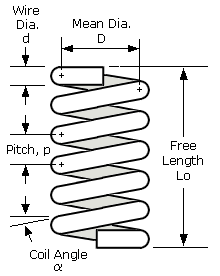 Forms of end connections: 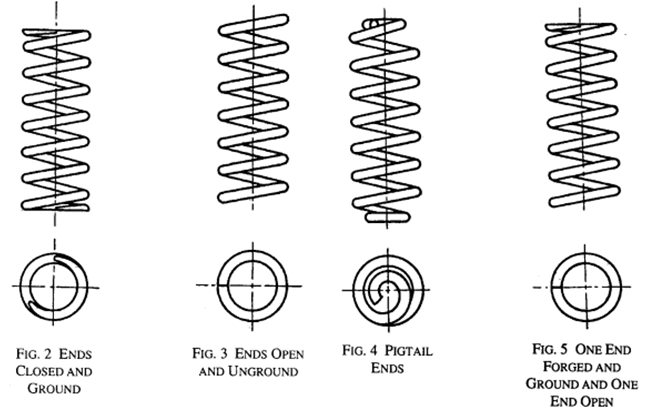 Closed and ground end springs are most stable and provide flat surface contacts perpendicular to the axis of the spring. Buckling is reduced when the ends of the spring are closed and ground. Springs that are open and ground are usually produced when it is necessary to have a lower solid height and or more active coils are required to affect the needed rate. Springs with open ends are very unstable and are produced when the solid height and rate are not an issue and where the design allows for more generous length tolerance. For transmitting axial loads on the connecting body, the spring ends shall be so formed that for any position of the spring the spring action is axial as far as possible. This is generally achieved by decreasing the pitch at the run out coil.
| Type of end |
Total number of turns |
Solid length |
Free Length |
|---|---|---|---|
| Plain ends |
n | (n+1)d | p×n+d |
| Ground ends |
n | n×d | p×n |
| Square ends | n+2 | (n+3)d | p×n+3d |
| Square and ground ends |
n+2 | (n+2)d | p×n+2d |
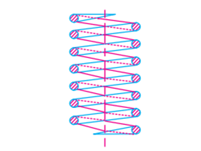 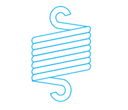 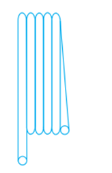 `
Compression springs have an open coil system that are designed to oppose compression along the axis, they are turned down and ground ends so that they forms the flat surface normal to the axis of the helix. Tension springs are designed to absorb energy or to store energy. They have to withstand tensile forces and hence the ends are formed into a hook. The hooks lie on the axis of the cylinder and the axial loads on the springs can be applied through them. These coils may be used in industrial robots, as door locks, or in perambulators. Torsion springs are characterized by their twisting strength. The flexible wind of the object stores mechanical energy. As the coil is twisted more tightly the force or torque becomes stronger in the opposite direction. 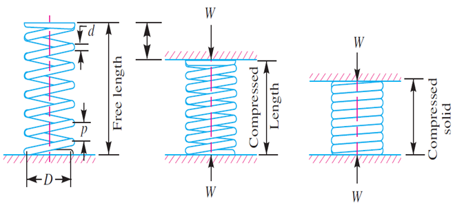 Buckling of compression springs: 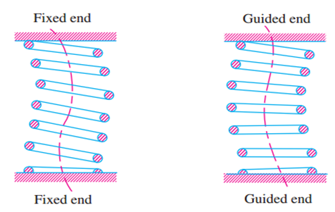 Experimentally it is found that when the free length of the spring (LF) is more than four times the mean or pitch diameter (D), then the spring behaves like a column and may fail by buckling comparatively at low load. WCR=k X KB X LF NOTE: WCR critical buckling load k= spring stiffness, LF=Free length of the spring, KB= Buckling factor (LF/D)
| LF/D | Hinged end spring |
Built-in end spring |
|---|---|---|
| 1 |
0.72 | 0.72 |
| 2 | 0.63 | 0.71 |
| 3 | 0.38 | 0.68 |
| 4 | 0.63 | 0.63 |
| 5 | 0.11 | 0.53 |
| 6 | 0.07 | 0.38 |
| 7 | 0.05 | 0.26 |
| 8 | 0.04 | 0.19 |

OBJECTIVE: To determine experimentally, the ultimate shear strength in double shear of mild steel plate. STEPS:
- Double click on the direct shear test on mild steel plate file , a window will open as shown below. 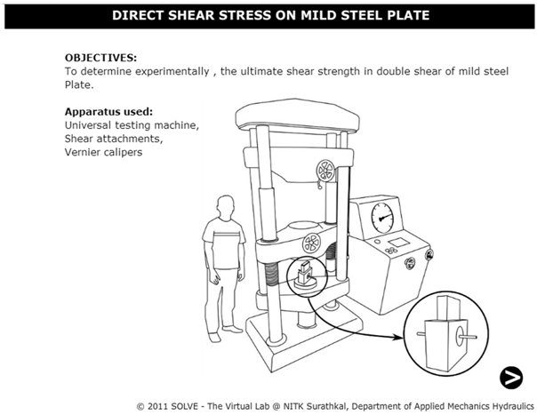
- Click on the NEXT button to move to the next step. 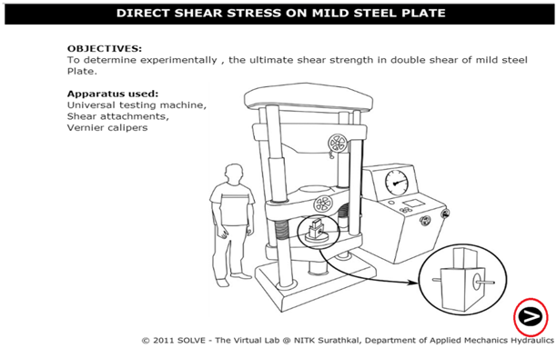
- Here the width and thickness of the mild steel plate is determined, then click on NEXT button to see the placing of the test set up. 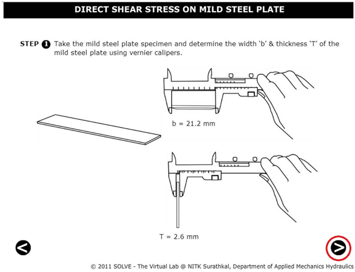
- After placing the specimen in UTM move to next step by clicking on the NEXT button.

- Switch on the machine and apply load gradually. 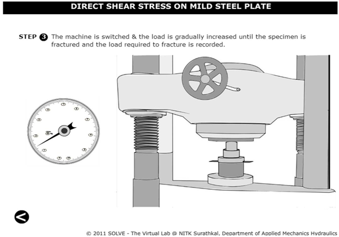
- Load is applied till failure of the specimen, then click on NEXT button to check the results. 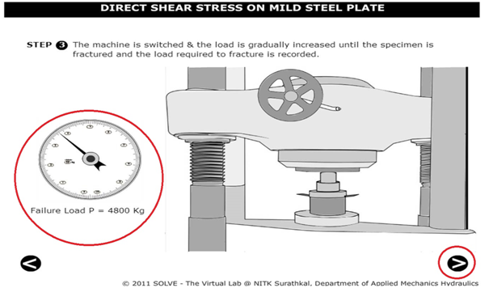
- The final results can be viewed from the tabular column as shown below. 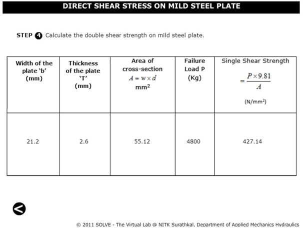


- List out types of springs?
- What do you understand by a helical spring?
- What is the difference between a closed coil helical spring and open coil helical spring?
- What do you mean by spring stiffness?
- What is a spring index?

- E.J.Hearn, Mechanics of Material, Pergaman Press, England,1972.
- F.P.Beer and E.R.Johnston, Mechanics of Material, 3rd Edition, Tata McGraw Hill, New-Delhi, 2007.
- U. C. Jindal, Strength of Materials, pg 820-837, 2012.
- F.L. Singer. Strength of Materials, Harper and Row Publishers.
- G. E.Diater, Mechanical Metallurgy, SI Metric Edition, McGraw – Hill.